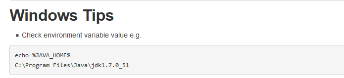
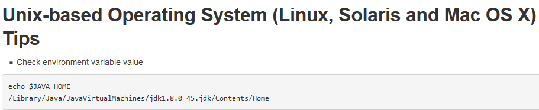
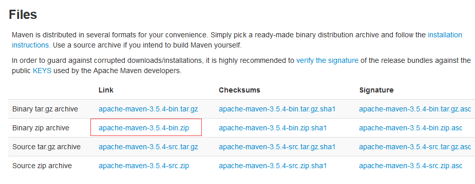
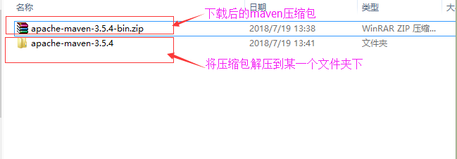
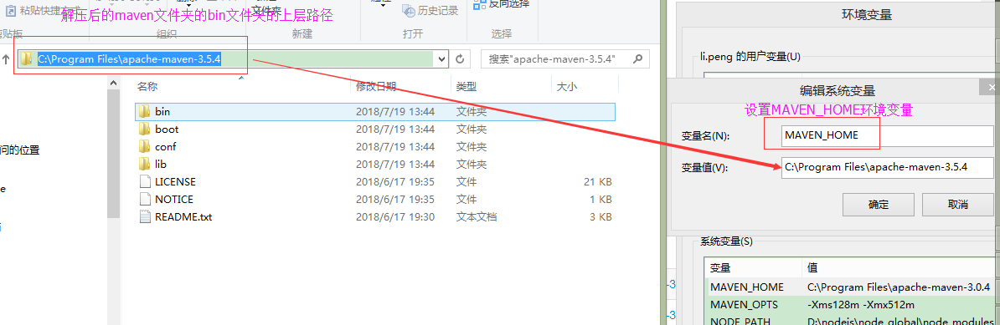
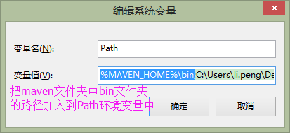
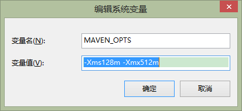
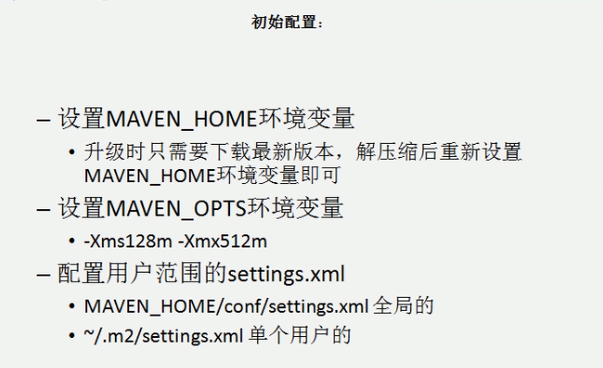
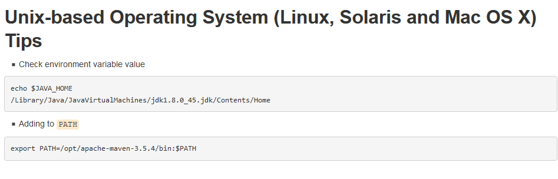

下面演示的是安装maven的3.5.4版本
第一步：确保已经安装了JDK并且设置了JAVA_HOME环境变量
由于maven需要依赖JDK来运行，所以电脑上必须安装了JDK，而且必须配置JAVA_HOME环境变量（新版本的JDK安装的时候不会默认设置JAVA_HOME环境变量，需要自己手动设置）
官方的检查JAVA_HOME环境变量的例子如下：


第二步：官网上下载maven压缩包并解压
maven官网：http://maven.apache.org/


第三步：把解压后的maven文件夹中的bin文件夹的路径加入到系统的环境变量（Path）中
推荐的是可以先设置MAVEN_HOME环境变量指向maven文件夹中bin文件夹的上层路径，然后再把bin路径加入到环境变量中


第四步：输入mvn -v命令确认maven安装成功
上官网的说明

第五步：设置MAVEN_OPTS环境变量
这个环境变量这要是配置maven在构建项目的过程中jvm的内存大小，如果在项目很大的时候不设置这个变量，则有可能会造成内存溢出

补充

Linux下的环境变量配置官网说明
